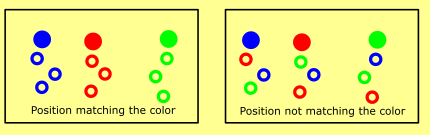

Tutorial: Inheritance
Intermediate Artist Programmer
This tutorial explains how to create particles which inherit one or more attributes, such as position or color, from other particles.
Sample
To see some of the techniques described on this page implemented in a project, create a new Sample: Particles project and open the ChildParticles scene.

Inheriting position
It helps if you think about inheritance in terms of parent and child particles.
For example, in the ChildParticles scene in the Sample: Particles project, check out the Fireworks entity.
It contains two emitters. Particles reference parent emitters by name, so in the first emitter you can see we've set the Emitter Name property. It's an optional name, but it's required if you want other emitters to be able to reference this emitter's particles.
In the second emitter we create a new initializer, Position from parent. This lets us reference the first emitter's particles and use their position to initialize the child particles. In the Parent emitter attribute we put the first emitter's name (Parent). This randomly assigns a parent particle for each child particle spawned and copy its position to the child particle.
The Parent Offset seed matches fields when more than one attributes are inherited. For example, if you want to inherit both Position and Color from the same parent particle (chosen at random) you should make the Parent Offset seed the same. Alternatively, you can make the Parent Offset seed for both initializers different, in which case particles spawning from one parent's position can inherit their color from a different random particle. Usually, you want to keep them the same, but in some cases you might want to mix them.

As you can see, this kind of inheritance doesn't control spawn count, maximum particles, or any other parameters, and is very random. For most effects it's sufficient, but sometimes you want more direct control over the particles.
Controlled inheritance
On occasion you will want to spawn a certain number of particles from a specific parent and have those particles only inherit attributes from the parent particle that spawned them.
To do this, choose a spawner for the child emitter from type From parent. Fill in the parent emitter's name in the Parent emitter field.
The Spawn Control Group determines how the particles save their control information. You need to assign the same control group on all initializers later in order to retrieve the spawning information.
There can be up to 4 control groups. If you spawn particles based on different conditions, or spawn more than two different child particles from the same parent, assign them different control groups so they don't get mixed up.
The Particle Spawn Trigger is the triggering condition on the parent side, which determines if particles should be spawned. If you leave it as None, no particles are spawned, so set it to On Hit or Lifetime.
On hit works for parent particles with a collider assigned, and triggers every time they hit the surface.
Lifetime is based on the parent particle's relative lifetime, and triggers every frame the lifetime is within the limits. There are two sliders to control from which point to which point particles should be spawned. Alternatively, you can reverse them to reverse the spawning condition. For example, a particle with lifetime condition (0.9 - 1.0) only spawns child particles in the last 10% of its lifetime.
Finally, the Particles/trigger determines how many particles are spawned each time the condition is met.
For child emitters, it's good practice to control the maximum number of particles the emitter can have, especially for non-deterministic cases, such as the collision hit.
Determinism
On the initializers, choose a Spawn Control Group corresponding to the spawner's control group. This forces the initializers to only work for particles spawned with the triggering condition, skipping the rest (if more than one spawner is assigned).
Ribbons and trails
Ribbon and trail renderers are a little more difficult to set up in the beginning, as they are dependent on spawn order. In case of parents, they also become dependent on the parent's spawn order.
Add a Spawn Order initializer to the parent. It will be used in the children particles.
On the child emitter, remove all spawners and add only one, From parent. You want to control the spawning of the children particles so all particles can be properly grouped in a ribbon behind the parent particle. If you add another spawner that adds random behavior to the system, the ribbons will connect in the wrong way. Set the triggering condition to Lifetime.
On the child emitter side again, add an Order from parent initializer. This assigns a spawning order to the particles, but also groups them by parent. If you set the Sort to use this order and assign a ribbon shape builder, you'll see how each trail is properly grouped behind the parent particle that spawned it.
Circular behavior
Particle emitters can inherit attributes circularly from each other, or even inherit attributes from particles in the same emitter. This can produce random or "swingy" effects, but can be interesting.
In the Colliding Particles particle entity (in the MainScene of the Sample: Particles project), you can see that particles are spawned on hit, but the parent emitter is the same. This means that each time a particle hits the surface, it produces more of the same kind. There are two important elements which allow this to happen.
First, we have two spawners. One spawns a small number of particles per second, which give us the initial elements to populate the system. The other spawner spawns more particles on hit and uses a control group.
Second, we have two Position initializers. The first assigns a position where we want the particles to appear. It works over all particles (even those spawned from parents), so if you leave it like this, it will fire more particles from the initial position every time they hit the surface.
The second initializer is Position from parent and initializes the particle positions using the same control group as the On hit spawner. The Position from parent overwrites the positions for the particles with control group, leaving the particles spawned from the Per second spawner untouched. This creates a small number of particles constantly coming from a single entry point and multiplying like an avalanche every time they hit the surface.